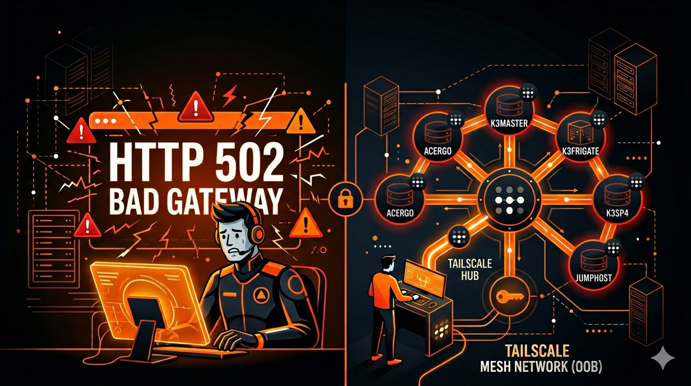

Every Light Was Green. The Cluster Was Dead.
Posted May 2026 — Part 4 of the HomeLab series
The Grafana ran in the cluster. The Uptime Kuma ran in the cluster. The Alertmanager paged Telegram through the cluster's network. When the cluster fell over, nothing was watching — and the dashboards that should have told me said everything was fine.

Last time the lesson was about high-availability ingress. This time it is about high-availability seeing.
The original version of this post was about one Fluent Bit sidecar shipping logs from one application pod. The pattern was correct and the manifest still works. But it was a single technique in service of a story I had not yet had the bruise to tell. The seven-hour cluster outage covered in the previous post supplied the bruise. This post is what the bruise taught.
The diagnostic moment was small: I checked Grafana to find out what was happening to the cluster, and Grafana was a pod inside the cluster. The Uptime Kuma that was supposed to ping me was a pod inside the cluster. The Alertmanager whose job was to escalate was a pod inside the cluster, and its only notification path was a Telegram bot reachable through the cluster's outbound network. Every layer of the observability stack was a tenant of the thing it was supposed to observe. There was no outside.
This post is the remediation: moving the watcher out, picking a notification channel that does not co-fail with what it watches, and discovering a small back-catalogue of bugs along the way that all share the same shape — every layer claiming "fine" against its own definition of fine while the gap between definitions ate the system.
Architecture Before
┌─────────────────────────────────────────┐
internet ──→ CF tunnel ──→ monitor.ayurforlife.eu │
(Grafana's own login, │
200 OK to anyone) │
│ │
▼ │
┌──────────────────────────────────┐ │
│ k3s cluster │ │
│ ┌────────────────────────────┐ │ │
│ │ monitoring/ │ │ │
│ │ prometheus │ │ │
│ │ grafana ⇠ pinned to .52 │ │ │
│ │ alertmanager ──→ Telegram│──┼─┼─→ via cluster egress
│ │ uptime-kuma ⇠ tenant of │ │ │ (cluster has to be up)
│ │ what it │ │ │
│ │ watches │ │ │
│ └────────────────────────────┘ │ │
│ .52 .53 .56 one61/62/6t │ │
└──────────────────────────────────┘ │
│
jumphost .62 │
┌──────────────────────────────────┐ │
│ uptime-kuma (Docker) :3001 │ │
│ LAN only, idle, doing nothing │ │
└──────────────────────────────────┘ │
kube-prometheus-stackdeployed into themonitoringnamespace — Prometheus, Alertmanager, Grafana, node-exporter, kube-state-metrics. The Helm release record had quietly disappeared at some point;helm list -n monitoringshowed onlyloki, but every other component was still running, untracked. Drift in plain sight.- Grafana pinned to
k3mastervianodeSelector: kubernetes.io/hostname: k3master. A.52outage = no Grafana. - A second Uptime Kuma running inside
monitoring/, watching the same cluster it lived in. LoadBalancer at192.168.100.205. Plus an unrelated Docker Uptime Kuma running on the jumphost at.62:3001, never exposed externally, doing nothing useful. - A standalone Alertmanager Deployment (separate from the kube-prometheus-stack one) routing critical + warning alerts to a Telegram bot whose token was reachable from cluster pods only when the cluster's outbound network was healthy — which is when alerts are least needed.
monitor.ayurforlife.eufronted by the cluster's cloudflared tunnel → Grafana's own login form. No SSO. A 200 OK to any visitor, please-type-your-password.- The original Fluent Bit sidecar pattern from the prior version of this post — correctly ferrying structured logs from one application pod to Loki with Prometheus exporter and stdout fanout. Architecturally fine; orthogonal to the rest of this story.
The Watcher Moved Out
The corrective sentence is one line: the host of the dashboard should not be the host of the things on the dashboard.
Practically: Grafana migrated to a Docker container on the jumphost (.62). Bind-mounted /var/lib/grafana for persistence across restarts. Provisioning files at ~/grafana/provisioning/ declare a single datasource pointed at a new LoadBalancer service monitoring/prometheus-lan at 192.168.100.202:9090. Prometheus itself stays in the cluster — it has to, it scrapes cluster targets — but the reading of it now happens from a process whose fate is no longer tied to the cluster's.
Two source-controlled dashboards land with the migration, both at homelab-config/jumphost/grafana-dashboards/:
homelab-overview— seven coloured square tiles, one per node, dark green for UP, red for DOWN, each tile a clickable link into the per-node detail dashboard. Below them a 7-day state-timeline strip showing every node's up/down history as merged coloured segments. Below that, 24-hour time series overlaying all seven nodes for CPU %, memory used %, root disk used %, and load average.node-detail— one node at a time via a$instanceGrafana variable, with per-core CPU, a stacked memory area chart broken into used / cached / buffers / available, disk usage per mountpoint, and network bytes-per-second per interface (filtered to excludelo,veth*,cni*,flannel*,docker*,tailscale*so the legend stays readable).
The in-cluster Uptime Kuma deployment was deleted; its LoadBalancer IP 192.168.100.205 returned to the MetalLB pool. The Docker Kuma on .62 — already running, already healthy, two months of uptime — was given a public hostname uptime.ayurforlife.eu through the existing cloudflared tunnel by adding one ingress rule and one Cloudflare DNS CNAME. It is now both the dashboard a stranger can hit for a green/red status page and the dashboard I check when the cluster's own dashboards are unreachable. The fact that those two roles can be served by the same instance, because the instance lives outside what it watches, is the entire point.
monitor.ayurforlife.eu was put behind Cloudflare Access with the same SSO gate that cams.ayurforlife.eu has had since day one. A curl -I against it now returns a 302 to cloudflareaccess.com instead of Grafana's bare login form. The unauthenticated surface is closed.
The Hardware Lesson
The first install on .62 used grafana/grafana:latest. The host is a 2011 AMD C-50 netbook board: two cores at 1.0 GHz, no SMT, 9-watt TDP, 1.5 GiB of RAM. Within thirty minutes the container had hit its 384 MiB memory cap, was thrashing into 396 MiB of swap, and every panel request was timing out at 47 seconds with apiserver was unable to write a JSON response: http: Handler timeout in the logs.
Grafana 12 ships an internal Kubernetes-style apiserver — unified storage — that backs dashboards and other resources through a Kubernetes-API-shaped layer instead of the old SQLite-backed store. On a real machine, this is a sensible direction. On a C-50, it is the difference between a working dashboard and no dashboard at all.
The fix was to pin the image to grafana/grafana:11.5.2. Idle now sits at ~210 MiB and 5–25 % CPU. Query latency 200 ms → 130 ms. The dashboards that had been saved into G12's unified storage do not survive the downgrade because G11 cannot read it; I restored them from JSON exports on disk. The image pin and the recovery procedure are written into the dashboard README.
The working docker run is small enough to live in the blog:
docker run -d \
--name grafana \
--restart unless-stopped \
--memory 384m \
--memory-swap 512m \
-p 3000:3000 \
-v /home/user/grafana/data:/var/lib/grafana \
-v /home/user/grafana/provisioning:/etc/grafana/provisioning:ro \
-e GF_SECURITY_ADMIN_USER=admin \
-e GF_SECURITY_ADMIN_PASSWORD=*** \
-e GF_AUTH_ANONYMOUS_ENABLED=false \
-e GF_ANALYTICS_REPORTING_ENABLED=false \
-e GF_ANALYTICS_CHECK_FOR_UPDATES=false \
grafana/grafana:11.5.2
The general rule: not every Grafana release is appropriate for every host. A pinned image and a documented incompatibility is worth more than the freshness of :latest.
The Channel Lesson
The Telegram receiver was failing during the cluster outage in the most embarrassing way possible — quietly. Alertmanager kept retrying for hours, the bot was unreachable because the cluster's network had broken, and the alerts arrived in a single deluge after recovery. By that point the operator had already noticed by other means. The channel had taught nothing.
Replaced with Gmail SMTP. The configuration change is small:
global:
smtp_smarthost: smtp.gmail.com:587
smtp_from: ive.mcfire@gmail.com
smtp_auth_password_file: /etc/alertmanager/secrets/smtp-password
smtp_require_tls: true
The Gmail App Password lives in a Kubernetes Secret mounted at /etc/alertmanager/secrets/smtp-password and in the age-encrypted credentials.md.age for recovery. Critical alerts route at group_wait: 10s, repeat_interval: 1h; warnings use the defaults; Watchdog and info severity still go to blackhole. The legacy Telegram secret stays on disk but is no longer mounted by the Deployment.
The deeper lesson — and the reason this generalises beyond Telegram — is that any notification path which depends on the cluster being healthy is the wrong notification path. The cluster being unhealthy is the entire event being notified. Direct SMTP from an Alertmanager whose network does not have to touch the failing thing first is closer to the right shape. The next iteration would route through an SMTP relay on .62 itself — same Alertmanager, different egress — so that even a cluster-network outage cannot stop the page. That is a follow-up.
Things That Went Wrong
The Tailscale --accept-routes hijack had a sibling. The previous post documented the fix on .52: a subnet router that advertises 192.168.100.0/24 must not accept it back. Twenty-four hours later, the Frigate backup CronJob started doing this from inside cluster pods:
[Thu May 28 02:00:02 UTC 2026] Starting rsync mirror to jumphost...
ssh: connect to host 192.168.100.62 port 22: Operation timed out
rsync: connection unexpectedly closed (0 bytes received so far) [sender]
rsync error: unexplained error (code 255) at io.c(232) [sender=3.4.3]
LAN ping .52 → .62 failed. Tailscale ping to 100.85.33.36 worked. The exact same bug, on .62, missed when the rule was applied yesterday. tailscale debug prefs on .62:
{
"RouteAll": true,
"AdvertiseRoutes": ["192.168.100.0/24"]
}
.62 was both advertising the LAN and accepting it back — ip route show table 52 confirmed 192.168.100.0/24 dev tailscale0 in the routing table that rule 5270 sent everything through, so reply packets to LAN peers were leaving via WireGuard while inbound arrived on enp1s0. Asymmetric, no return path. One sudo tailscale set --accept-routes=false and roughly thirty hours of stuck postgres-backup CronJob runs across frigate, chickenflow, hydroflow, and face-recognition namespaces recovered on the next schedule. Rule restated: every subnet-routing peer needs this rule, on the day it starts advertising, including the second one.
The phone-node CNI quietly fails closed. ChickenFlow's postgres-backup CronJob shipped without a nodeSelector. For roughly half of scheduled runs, the scheduler placed it on a phone node — one6t or one61 — where in-pod DNS does not reach CoreDNS at 10.43.0.10. Reproducing under a debug Pod pinned to one6t made the failure visible:
$ kubectl exec -n chickenflow dns-test -- cat /etc/resolv.conf
search chickenflow.svc.cluster.local svc.cluster.local cluster.local
nameserver 10.43.0.10
options ndots:5
$ kubectl exec -n chickenflow dns-test -- nslookup chickenflow-postgres
;; connection timed out; no servers could be reached
command terminated with exit code 1
$ kubectl exec -n chickenflow cf-debug -- sh -c \
"PGPASSWORD=*** pg_dump -h chickenflow-postgres -U *** -d *** --schema-only"
pg_dump: error: could not translate host name "chickenflow-postgres" to address: Try again
The Alpine init step apk add openssh-client (which would have produced ssh for the subsequent scp to .62) failed silently because dl-cdn.alpinelinux.org would not resolve either. The pg_dump failed visibly. The Job controller retried, exhausted backoffLimit, deleted the pod within ~30 seconds, and left nothing to inspect — which is why this looked like a Tailscale problem for so long even after the Tailscale problem was fixed.
HydroFlow's identical-shape CronJob had this from day one:
spec:
jobTemplate:
spec:
template:
spec:
nodeSelector:
kubernetes.io/hostname: k3frigate
It never saw the bug — its survival was masking the fault for everyone else. Same line added to chickenflow's CronJob (pinned to k3master for control-plane consistency) and the next manual run completed in 21 seconds, scp'd a 26 KiB dump to .62, and applied retention. The deeper bug — some interaction between flannel and the USB-tethered 10.0.x.x interfaces on the phones — is its own investigation. The practical workaround: do not put DNS-dependent workloads on phone nodes. The phones serve Adreno OpenCL inference and routed IP traffic just fine; what they cannot serve is anything that needs Kubernetes cluster DNS.
CPUThrottlingHigh was the chart talking, not the workload. Every node-exporter pod was being CFS-throttled 52–85 % of periods. Actual CPU usage was 3–20 milli-cores. Side by side:
| pod | CPU used | throttled CFS periods |
|---|---|---|
node-exporter-k2w8z |
15.9 m | 85.0 % |
node-exporter-2f4rx |
19.8 m | 85.1 % |
node-exporter-lzhv6 |
15.8 m | 84.9 % |
node-exporter-fhc25 |
8.7 m | 66.0 % |
node-exporter-vnm5v |
7.7 m | 56.2 % |
node-exporter-z6h62 |
3.5 m | 52.5 % |
The kube-prometheus-stack chart ships limits.cpu: 200m, which sits just below the burst envelope of a node-exporter scrape — each 30-second scrape spends a few milliseconds clipping the limit and waits out the rest of the 100 ms CFS period. The alert's hold window made a millisecond-scale reality look chronic. The fix is a one-key strategic-merge patch:
# patch-node-exporter-resources.yaml — drop only limits.cpu
spec:
template:
spec:
containers:
- name: node-exporter
resources:
limits:
memory: 64Mi
requests:
cpu: 50m
memory: 32Mi
Applied with kubectl patch ds -n monitoring node-exporter --patch-file ... --type=merge. The 50 m request stays for scheduling; the cgroup can now burst freely during the scrape window. Throttle rate dropped to zero on the next sample. The alert was correctly describing real CFS behaviour; the CFS behaviour was correctly responding to the chart's defaults; the chart's defaults were wrong for this workload. Three layers each telling the truth in a way that added up to a falsehood.
Source Control Catches Up
The kube-prometheus-stack Helm release had drifted out of management before this work began — the components were still running, but helm list -n monitoring no longer claimed them. Re-adopting under Helm is a real piece of work that I deferred. What I did do was source-control the pieces I had touched directly, in a homelab-config/apps/monitoring/ directory whose README is honest about the rest:
alertmanager.yaml— the standalone Deployment + ConfigMap with the email receiverprometheus-lan-svc.yaml— the LoadBalancer at.202that lets jumphost Grafana query Prometheusadditional-scrape-configs.yaml— the plaintext form of the Secret that adds the jumphost node-exporter scrape (target.62:9100)patch-node-exporter-resources.yaml— the strategic-merge patch that removed the CPU limithomelab-alerts-prometheusrule.yaml— the homelab-specific PrometheusRule (frigate cameras, frigate service, backups, node health)README.md— names what is and is not under source control, gives the recovery commands
The dashboards live in a parallel directory at homelab-config/jumphost/grafana-dashboards/ with their own README and re-import procedures. The repo shape after this round:
homelab-config/
├── apps/
│ └── monitoring/
│ ├── alertmanager.yaml # standalone Alertmanager + cm
│ ├── prometheus-lan-svc.yaml # LB IP .202 for .62 Grafana
│ ├── additional-scrape-configs.yaml # jumphost node-exporter target
│ ├── patch-node-exporter-resources.yaml # drop CPU limit
│ ├── homelab-alerts-prometheusrule.yaml # frigate cams, backups, node-health
│ ├── README.md # the drift story, honestly
│ └── loki/ # still helm-tracked
├── apps/
│ └── chickenflow/
│ └── cronjob.yaml # nodeSelector pin
└── jumphost/
└── grafana-dashboards/
├── homelab-overview.json
├── node-detail.json
└── README.md # image-pin rationale + recovery
Total monitoring-stack files under source control: 1 → 9. The drift itself is not eliminated, but the next operator (very possibly future me) now has a written starting point rather than a kubectl-archaeology project.
Design Decisions
The non-obvious choices, listed:
- Move only Grafana to
.62, not Prometheus. Prometheus has to live next to the things it scrapes; relocating it would mean pushing scrape data across the LAN twice per interval. Grafana only reads; the read path is what needs the resilience. grafana/grafana:11.5.2pinned, never:latest. Grafana 12's internal apiserver is too heavy for the AMD C-50. Pinning beats:latestwhenever the host hardware is a known constraint. Documented in the dashboard README so the rule does not have to be re-learnt.monitor.*behind Cloudflare Access SSO.uptime.*open. Two different audiences. The Grafana dashboard is for operators and contains query-the-cluster power; the Kuma status page is for anyone who wants to know whether the homelab is up. The auth gate has to match the audience, not the hostname pattern.- Gmail SMTP, not an SMTP relay on
.62. Fewer moving parts now; a relay on.62is the next step if Gmail egress becomes a constraint. The cheapest fix that closes the worst-case is the right fix today. - ChickenFlow
nodeSelector: k3master, notk3frigatelike hydroflow. Symmetric pattern — both backup jobs pin to a known-good control-plane node. Pickedk3masterhere for the spread;k3frigateis already carrying Frigate and would have been the wrong shoulder to lean on. - Remove the node-exporter CPU limit entirely, not raise it. The chart's defaults were wrong in principle, not in degree. Raising the limit pushes the next CFS clip a little further out without changing the dynamic. Removing it lets the cgroup burst during scrape and stay invisible the rest of the time.
- Source-control the patches, not the full resources.
kube-prometheus-stackis currently untracked by Helm; full-resource manifests would diverge from the chart's idea of itself the next time someone re-adopts under Helm. Strategic-merge patches survive that re-adoption — they describe what changed against the chart, not the chart itself.
Architecture After
┌─────────────────────────────────────────────┐
internet ──→ CF tunnel ──→ Access SSO ──→ monitor.ayurforlife.eu
└─→ (open) ──→ uptime.ayurforlife.eu
│
▼
┌───────────────────────────────┐
│ jumphost .62 │
│ ┌─────────────────────────┐ │
│ │ grafana (docker) │ │
│ │ pinned 11.5.2 │ │
│ │ datasource ─────────┐ │ │
│ │ uptime-kuma (docker) │ │ │
│ │ canonical OOB │ │ │
│ └───────────────────────┼─┘ │
└──────────────────────────┼────┘
│
▼ 192.168.100.202:9090
┌──────────────────────────────┐
│ k3s cluster │
│ prometheus ⇠ scrapes all │
│ alertmanager ──→ Gmail SMTP (smtp.gmail.com:587)
│ exporters / sidecars │
│ (kube-prometheus-stack, │
│ no longer Helm-tracked) │
└──────────────────────────────┘
- Prometheus, Alertmanager, in-cluster ServiceMonitors, exporters, sidecars: still in the cluster, where they have to be.
- Grafana: out of the cluster, on
.62as a Docker container pinned tografana/grafana:11.5.2, persistent bind-mount, datasource pointed atmonitoring/prometheus-lanvia MetalLB. - Uptime Kuma: one instance, on
.62, public atuptime.ayurforlife.eu. monitor.ayurforlife.eu: Cloudflare Access SSO in front, same gate ascams.*.- Alertmanager: Gmail SMTP receiver, no Telegram dependency, source-controlled at
homelab-config/apps/monitoring/alertmanager.yaml. - ChickenFlow
postgres-backup: pinned tok3mastervia nodeSelector, source-controlled. - node-exporter: CPU limit removed via strategic-merge patch, source-controlled.
A Note on the Sidecar Pattern
The original version of this post was about a single Fluent Bit sidecar attached to an application pod, sharing an emptyDir volume, fanning logs out to Loki, a Prometheus exporter on :2021, and stdout for kubectl logs access. That pattern is correct and is still in use where it applies. It belongs to a different layer of the problem than this post is now about: how the aggregation, querying, alerting, and visualisation of those signals stays healthy when the cluster around them does not. A sidecar makes one pod observable. The arrangement above keeps the observing itself observable.
Impact
- Grafana host: k3master pod (lost when
.52blips) →.62Docker container (cluster-independent) monitor.ayurforlife.euauth gate: Grafana login form → Cloudflare Access SSO- External status page reachable from outside: none →
uptime.ayurforlife.eu - Uptime Kuma instances: 2 (one in cluster, one on
.62, neither exposed) → 1 (.62, publicly reachable, gated where it should be) - Cluster pods →
.62LAN reachability:Operation timed out→ ~0.5 ms - Alertmanager outbound channel: Telegram (cluster-network-dependent) → Gmail SMTP (direct egress)
frigate/chickenflow/hydroflow/face-recognitionpostgres backups: failing ~30 hours → green on next schedulenode-exporterCFS throttle rate: 52–85 % → 0 %homelab-configfiles for the monitoring stack: 1 → 9- MetalLB LB IPs in use: 11 → 10 (one returned to the pool)
The Payoff
The artefact is a watcher that runs on a different physical host than the workloads it watches, a notification path whose delivery does not depend on what it is delivering about, two source-controlled dashboards that show node health at a glance and per-instance detail one click in, and a small README whose job is to admit honestly which pieces of the stack are not yet under source control.
The recurring lesson across this post and the one before it is that each layer's local "fine" is not the system's "fine". Cloudflare's protocol supported HA; one of its deployments did not. Tailscale's tunnel was up; the host's DNS was empty. Frigate's pod was running; the node was about to lock up. Grafana was responsive; it lived inside the thing it was supposed to report on. Telegram had a green status page; the path to it ran through the same network that was on fire.
Real observability is not a stack of tools. It is a discipline of placing each watcher one layer outside what it watches, and accepting that the outermost watcher — the human reading the email — is the one that finally has to decide what is real.
Cluster Context
| Node | Role | Hardware | LAN IP | OS |
|---|---|---|---|---|
| k3master | control-plane / etcd / Prometheus host | mini PC, Intel i5-1035G1 | 192.168.100.52 | Ubuntu 24.04 LTS |
| k3frigate | control-plane / etcd / Frigate compute | mini-ITX, Intel i5-6600K, GeForce GTX 1050 Ti | 192.168.100.56 | Ubuntu 24.04 LTS |
| k3sp4 | control-plane / etcd | Surface Pro 4, Intel i5-6300U | 192.168.100.53 | Ubuntu 24.04 LTS (surface kernel) |
| one61 | worker (arm64) / Adreno inference | OnePlus 6, Adreno 630 | USB tether to .52 | postmarketOS |
| one62 | worker (arm64) / Adreno inference | OnePlus 6, Adreno 630 | USB tether to .52 | postmarketOS |
| one6t | worker (arm64) / Adreno inference | OnePlus 6T, Adreno 630 | USB tether to .52 | postmarketOS |
| jumphost | OOB / subnet router / Grafana + Uptime Kuma host | netbook board, AMD C-50 (2c/1 GHz/9 W TDP), 1.5 GiB RAM, 232 GiB SSD | 192.168.100.62 | Debian 13 (trixie) |
| laptop | workstation | Acer 16, x86_64 | DHCP | Fedora 44 |
k3s v1.35.0+k3s3, etcd HA across the three control-plane nodes, MetalLB L2 pool on 192.168.100.200–220. monitoring/ namespace runs Prometheus, Alertmanager, exporters; Grafana and Uptime Kuma now live on the jumphost.
Manifests:
homelab-config/jumphost/grafana-dashboards/— the two dashboards, with import / re-export procedures and the Grafana image-pin rationalehomelab-config/apps/monitoring/— standalone Alertmanager (Gmail SMTP), prometheus-lan LoadBalancer Service, additional-scrape-configs Secret, node-exporter CPU-limit patch, homelab-alerts PrometheusRule, README on the Helm drifthomelab-config/apps/chickenflow/cronjob.yaml— the nodeSelector pin that finally lets postgres-backup run reliablyhomelab-config/jumphost/— sshd hardening, fail2ban jail,/etc/network/interfaces, the full bastion role
Previous: · The Tunnel Was Up. The Cameras Were 502. · Frigate NVR Migration on k3s · A k3s Cluster Over USB Cables